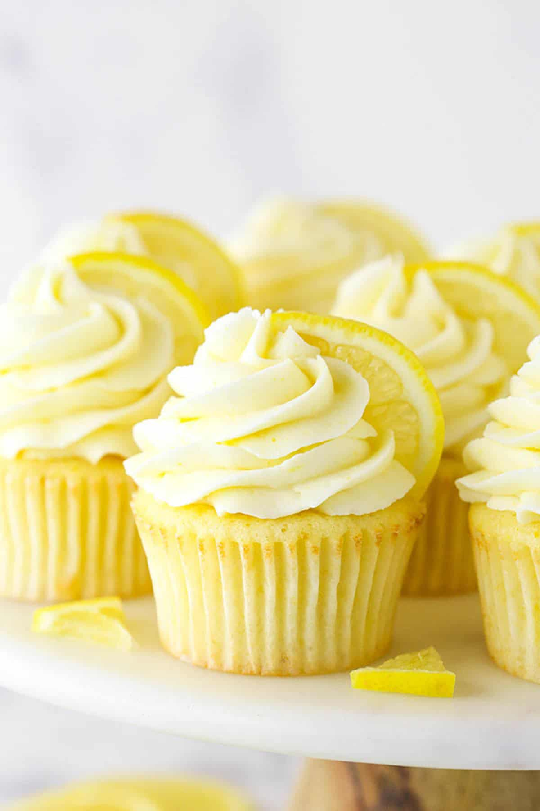

Lemon Cupcakes

Description
Here is a lemon cupcake recipe I use for beautifully delicious treats.
Ideally, you'd use buttercream frosting to top the cupcakes,
but I tried these with lemon cream icing for a less buttery option,
and they were perfect! These cupcakes are truly lighter than air and will melt in your mouth.
Ingredients
Cupcakes:
- 3 cups self-raising flour
- ½ teaspoon salt
- 1 cup unsalted butter, at room temperature
- 2 cups white sugar
- 4 large eggs, at room temperature
- 2 tablespoons lemon zest
- 1 teaspoon vanilla extract
- 1 cup whole milk, divided
- 2 ½ tablespoons fresh lemon juice, divided
Lemon Cream Icing:
- 2 cups chilled heavy cream
- ¾ cup confectioners' sugar
- 1 ½ tablespoons fresh lemon juice
Steps
- Preheat the oven to 375 degrees F (190 degrees C).
Line 30 cupcake pan cups with paper liners.
- Prepare the cupcakes: Sift flour and salt together in a bowl.
Beat butter and sugar together in another bowl with an electric
mixer until light and fluffy. Add in eggs one at a time,
beating after each addition to incorporate.
Mix in lemon zest and vanilla.
- Gently beat flour mixture into butter mixture,
1/3 at a time, alternating with 1/2 of the milk
and 1/2 of the lemon juice after each of the first two additions
of flour. Beat until just combined; do not overmix.
- Fill the prepared cupcake liners with batter, 3/4 full,
and bake in the preheated oven until a toothpick inserted
in the center comes out clean, about 17 minutes.
Let the cupcakes cool in the pans before removing them to
finish cooling on a rack, about 10 minutes.
- Meanwhile, make the icing: Beat cream in a chilled bowl
with an electric mixer set on low until cream begins to thicken.
Add confectioners' sugar and lemon juice, a little at a time,
beating after each addition, until fully incorporated.
Increase the mixer speed to high and beat until the icing forms
soft peaks, about 5 minutes.
- Spread icing on cooled cupcakes. Refrigerate leftovers